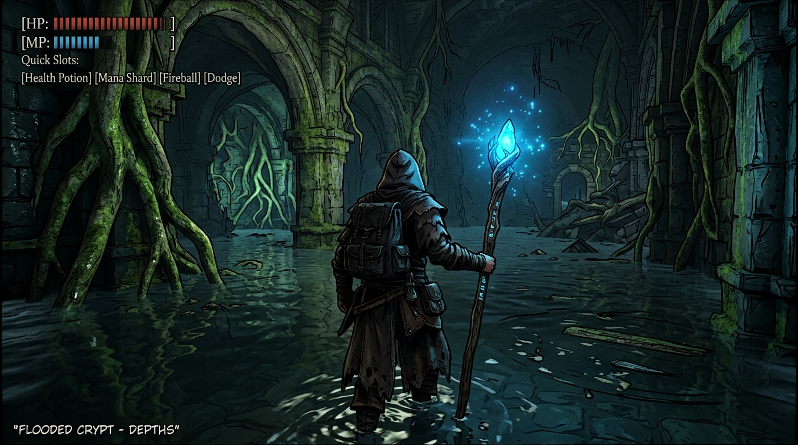
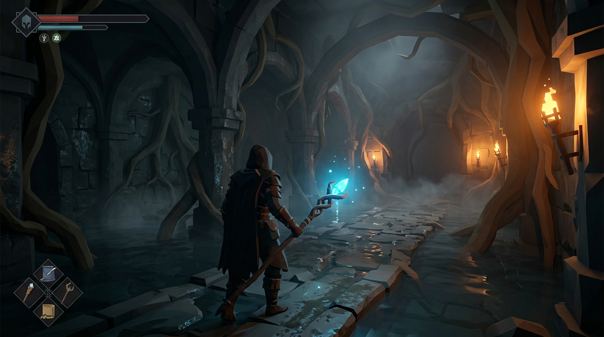
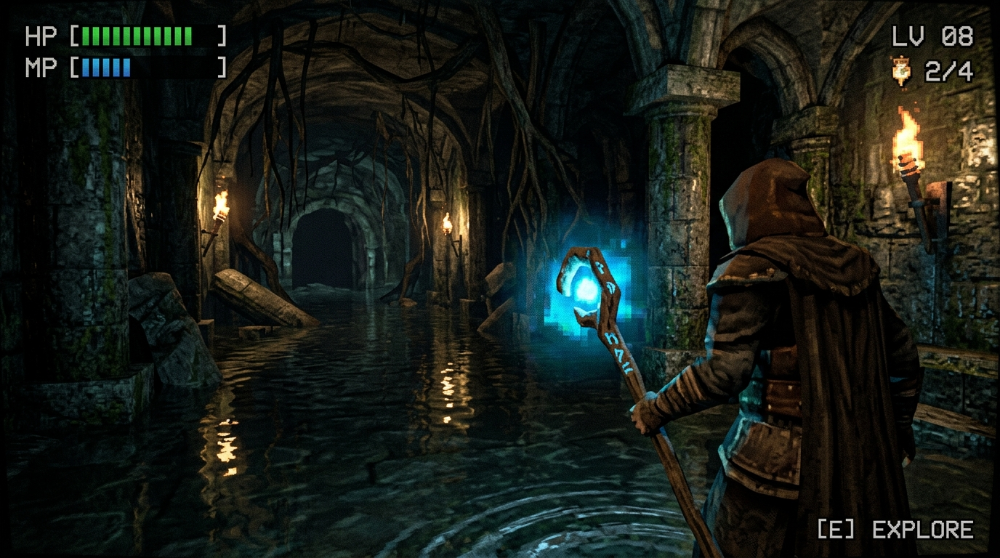

Rogue Destiny — Выбор визуального стиля 3D
1. Dark Cel-Shaded / Souls-Comic (Рекомендуемый)
Контрастные контуры (ink-lines), глубокие тени, сочные вспышки лазурной магии и искр. Скрывает простоту геометрии и выглядит как тёмная интерактивная графическая новелла.

2. Мрачный Low-Poly Souls
Гранёные полигоны (flat shading), минимализм, густой туман и факелы. Максимальный FPS и мгновенная загрузка.

3. Retro-PS1 / Bloodborne Demake
Аутентичный ретро-стиль 90-х: зернистость, псевдо-пикселизация, дрожание текстур и гнетущая хоррор-атмосфера.
